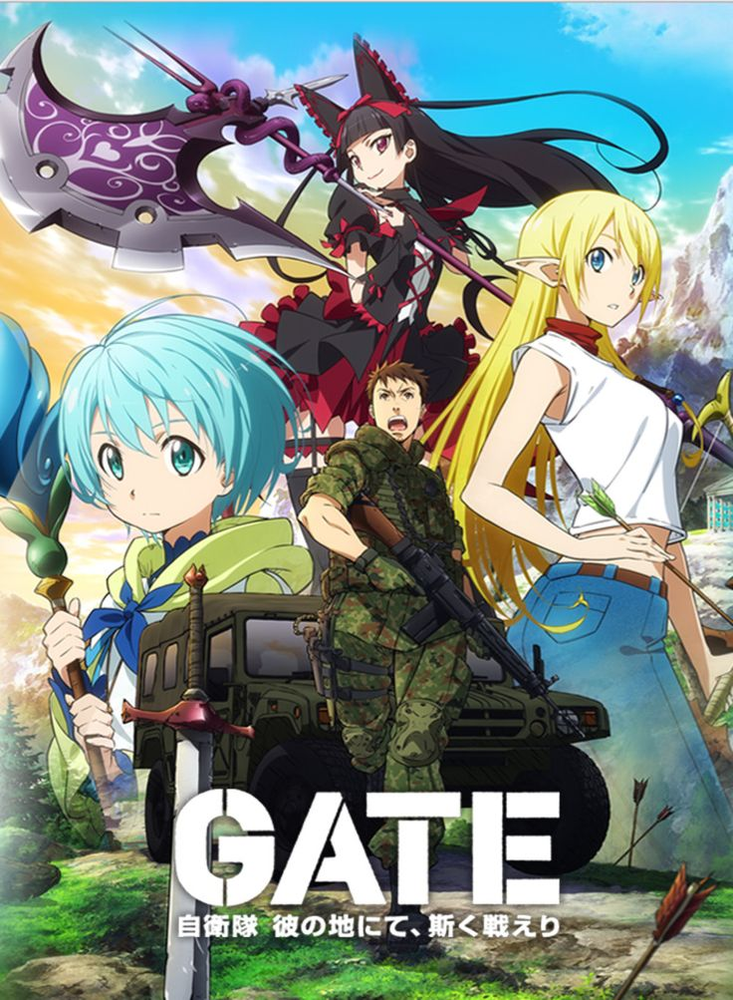

Blog Post Title
by RIKKU
Posted on January 9 , 2025

It’s hard to see the Solo Leveling anime as anything other than a massive success. The original manhwa has already been incredibly popular for its engaging storytelling and stellar art and action, and the incredible direction of the anime has brought that out in the most bombastic and gorgeous manner possible.
Solo Leveling is already the biggest anime of the winter 2024 season, and its success could pave the way for a big change in the anime industry. Anime, like any other medium, tends to try and capitalize on whatever the current trends are, so with Solo Leveling being such a massive success, that could lead to a criminally underrated medium finally getting the representation in anime it deserves.
Read More →Posted on January 9 , 2025

Off-duty Japan Self-Defense Forces (JSDF) officer and otaku Youji Itami is on his way to attend a doujin convention in Ginza, Tokyo when a mysterious portal in the shape of a large gate suddenly appears. From this gate, supernatural creatures and warriors clad in medieval armor emerge, charging through the city, killing and destroying everything in their path. With swift actions, Youji saves as many lives as he can while the rest of the JSDF direct their efforts toward stopping the invasion.
Three months after the attack, Youji has been tasked with leading a special recon team, as part of a JSDF task force, that will be sent to the world beyond the gate—now being referred to as the "Special Region." They must travel into this unknown world in order to learn more about what they are dealing with and attempt to befriend the locals in hopes of creating peaceful ties with the ruling empire. But if they fail, they face the consequence of participating in a devastating war that will engulf both sides of the gate. [Written by MAL Rewrite]
Read More →Posted on January 15 , 2025
Iori Kitahara moves to the coastal town of Izu for his freshman year at its university, taking residence above Grand Blue, his uncle's scuba diving shop. Iori has high hopes and dreams about having the ideal college experience, but when he enters the shop he is sucked into the alcoholic activities of the carefree members of the Diving Club who frequent the place. Persuaded by upperclassmen Shinji Tokita and Ryuujirou Kotobuki, Iori reluctantly joins their bizarre party. His cousin Chisa Kotegawa later walks in and catches him in the act, earning Iori her utter disdain.
Based on Kenji Inoue and Kimitake Yoshioka's popular comedy manga, Grand Blue follows Iori's misadventures with his eccentric new friends as he strives to realize his ideal college dream, while also learning how to scuba dive.
Read More →